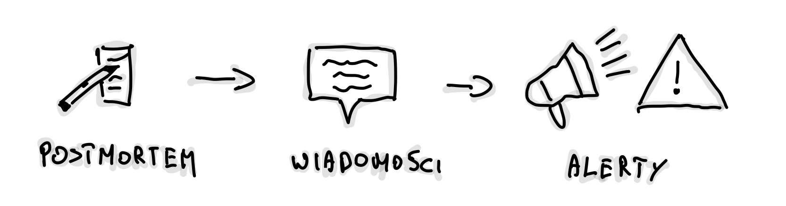
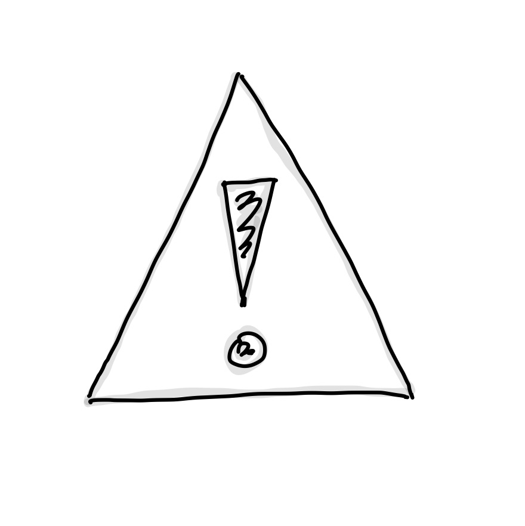
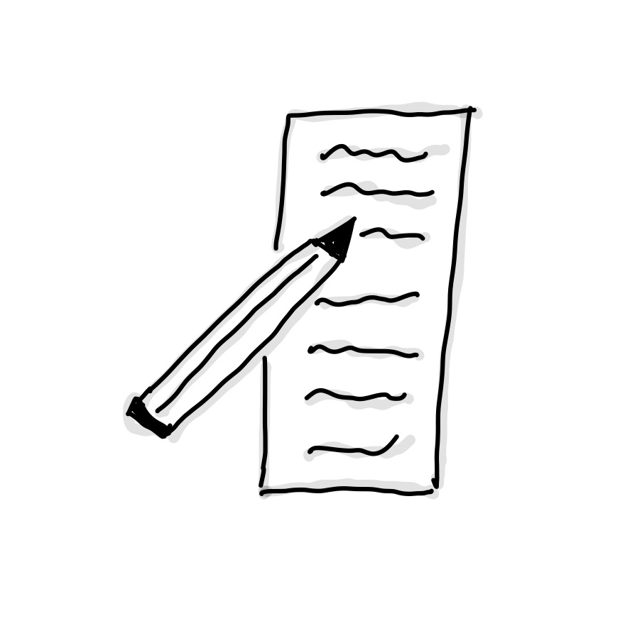

Przepis na cotygodniowy przegląd usług
W poprzednim wpisie, „Biznesowe SLA w praktyce”, opisałem cztery inicjatywy, które wdrożyliśmy w naszym zespole, aby poprawić nasz produkt i dyżury. Dziś chciałbym zająć się tematem, który u nas świetnie działa, a który być może nie każdy traktuje jako oczywisty krok – roli, jaką pełni Weekly Service Review (WSR).
Zanim wejdziemy w szczegóły samego WSR-a, przejdźmy przez potencjalne pułapki, jakie niesie ogólnie ze sobą spisywanie tego, jak pracujemy w zespole.
-
Samo opisywanie procesów nie jest złe, ale...
Traktujmy spisywanie jako czas na retrospektywę – jedna osoba przygotowuje materiał, a później zastanawiamy się wspólnie, co można ulepszyć. Tutaj jest jednak pewne ryzyko. Publikowanie tych zapisów zbyt szeroko może prowadzić do porównań między zespołami, które nie mają pełnego kontekstu. To nie ma być konkurs piękności, kto ma "ładniejszy" proces – to ma wspierać nowych członków zespołu, żeby szybciej wdrożyli się w nasz sposób pracy.
-
Unikajmy dogmatyzmu.
Formalizacja procesów niesie ze sobą jedno duże zagrożenie – skłonność do traktowania ich jako prawd objawionych. Spisanie tego, jak pracujemy, jest pomocne, ale tylko wtedy, kiedy rozumiemy, że to wskazówki, a nie zasady wyryte w kamieniu. Rzeczywistość zawsze będzie miała swoje wyjątki – urlopy, zmiany w zespole, nowe priorytety – i sztywne trzymanie się ustalonych procedur może zabić ducha zespołu.
-
Koszt utrzymania procesów.
Udokumentowanie sposobu pracy to jedno, ale utrzymanie tego wymaga zaangażowania. Ktoś musi poświęcić czas na aktualizowanie, wprowadzanie poprawek i dostosowywanie procesu do bieżących realiów. To może być spory koszt.
W gruncie rzeczy, chodzi tu o balans – z jednej strony chcemy mieć porządek i jasność co do tego, jak działamy, z drugiej, nie możemy zapominać o elastyczności i kosztach utrzymania.
Weekly Service Review – jak ewoluowała nasza formuła¶
Weekly Service Review (WSR) to ceremonia, które wdrożyliśmy jako odpowiedź na rosnącą potrzebę lepszego zrozumienia incydentów i stabilności naszych usług. Pomysł narodził się dzięki inspiracji podejściem Google do SRE, a początkowy format był prosty – ot, dokument w Google Docs, trzy akapity, i wyznaczona osoba, która zbierała informacje przez tydzień. Brzmi skromnie? Bo tak było.

W tamtym czasie zmagaliśmy się z dużą liczbą incydentów, głównie związanych z naszym partnerem zewnętrznym. Robienie pełnego postmortem po każdym problemie nie miało sensu, więc postawiliśmy na regularne przeglądy, aby zebrać najważniejsze informacje i wyciągnąć wnioski. Omawialiśmy m.in.:
-
przyczyny problemów (np. spike związany z X),
-
odpowiedzialność (kto z zespołu był ownerem),
-
wpływ na użytkowników,
-
oraz działania naprawcze (dodanie nowych czujek, poprawa polityki retry, zwiększenie liczby podów, wyjaśnienie problemu z Y).
Obok tego, analizowaliśmy również kanał “help”, gdzie zbieraliśmy powtarzające się pytania do naszego zespołu. Często proste zmiany w narzędziach, jak dodanie nowej funkcjonalności do panelu administracyjnego, mogły rozwiązać problem. A czasami rozwiązania były wręcz absurdalne – "reset pomógł". Naszym celem było jednak zrozumienie, dlaczego pytania wciąż się pojawiają i jak ograniczyć ich liczbę w przyszłości.
Trzeci element? Alerty. Omawialiśmy większość, analizując przyczyny i decydując, co z nimi zrobić. Może można to jeszcze zostawić na później, czy ktoś musi się tym zająć od razu? Czasem alerty były wynikiem metryki typu „unexpected rejection reason”, a czasem problem pojawiał się na poziomie SLI endpointu. W każdym przypadku skupialiśmy się na wyciąganiu wniosków, by lepiej zarządzać incydentami na produkcji.
Największą zaletą tego podejścia była liczba wygenerowanych pomysł. Zamiast podejmować decyzje, co robić, skupialiśmy się na tym, czego nie robić. Dzięki temu lider zespołu miał ułatwione zadanie – wspierać wybieranie, które pomysły odrzucić.
Wprowadzenie struktury¶
Z czasem iterowaliśmy. Wprowadzenie rotacyjnej roli prowadzącego WSR wprowadziło różnorodność – każdy miał inny styl, a każda edycja wnosiła coś nowego. Początkowo zbieraliśmy informacje ręcznie, potem eksperymentowaliśmy z workflow na Slacku i Google Spreadsheet. Kiedy przyszła moja kolej na prowadzenie, zauważyłem, że potrzebujemy nieco więcej struktury i automatyzacji. Dlatego wprowadziłem kilka zmian.
Rozdzieliłem odpowiedzialność za zbieranie tematów od ich prezentacji, a sekcje WSR zyskały bardziej uporządkowany format:
-
Nowości: Przestrzeń na wymianę informacji o nowych dashboardach, procesach, automatyzacjach czy innych zmianach, które wpływały na pracę zespołu. To nie było demo, ale miejsce na szybkie pytania, krytykę czy pochwały – wszystko, by zadbać o well-being inżynierski.
-
Alerty:

Powtórzyliśmy format z pierwszej wersji, ale bardziej szczegółowo omawialiśmy powody alertów, analizowaliśmy metryki i decydowaliśmy, czy coś wymaga natychmiastowej reakcji.
-
On-call handover: Przechodziliśmy przez dyżury i analizowaliśmy, jakie problemy nie zostały zaopiekowane. Przyznawaliśmy oceny dyżurom w skali 1-5 (od „rzeźni” po „nudę”). W tej sekcji widać było nasz postęp – z czego narzekaliśmy kiedyś, a z czym radzimy sobie dziś.
-
Postmortemy:

Wprowadziliśmy tzw. "Amazon 6-Pager" – każdy w ciszy czytał i komentował, a potem wspólnie omawialiśmy problemy. To była jedna z moich ulubionych zmian– dużo mięsa, dużo skupienia.
-
Priorytetyzacja zadań oznaczonych tagiem WSR: dbaliśmy o to, by problemy techniczne z backlogu były rozwiązywane lub odrzucane, jeśli straciły na ważności. Jednak ta sekcja z czasem również przestała działać tak dobrze, jak byśmy chcieli.
-
Feedback: Mieliśmy zaplanowane automatyczne wiadomości do zespołów, by zebrać ich opinie. Niestety, ta inicjatywa nie przynosiła oczekiwanych rezultatów, bo trudno było zebrać realny feedback.
Zaczęliśmy również monitorować koszty infrastruktury w Azure, a szczególnie ich przeliczanie na „transakcje” czy „procesy”, żeby zobaczyć, jak nasze systemy zareagują na wzrost skali. Ta metryka stała się bardziej wartościowa niż standardowe, miesięczne raporty kosztów.
Format na szersze grono¶
W miarę jak nasz zespół rozwijał się, a rola samego spotkania rosła, format WSR ewoluował, stając się bardziej dostosowanym do szerszego grona odbiorców. Dziś spotkania są bardziej ustrukturyzowane, z jasno określoną rolą prowadzącego, a każda osoba ma możliwość dodawania tematów, które uważa za ważne. Inżynierowie omawiają dostępność i stabilność usług oraz szukają sposobów na ich poprawę. Ceremonia obejmuje sekcje takie jak:
-
Planowane niedostępności vendorów/partnerów - przeglądamy nadchodzące zmiany w usługach naszych partnerów.
- Odpowiadamy na trzy pytania:
- Czy powinniśmy wyciszyć niektóre alerty?
- Czy powinniśmy wyłączyć niektóre części produktu (procesy)?
- Czy powinniśmy wyświetlić baner informujący klientów o niedostępności?
- Odpowiadamy na trzy pytania:
-
Omawiamy też wydarzenia z poprzedniego tygodnia i analizujemy, czy nasze działania były trafione, a metryki zachowały się zgodnie z oczekiwaniami.
-
Incydenty i postmortemy – omówione wyżej.
-
Nowości v2 – zbieramy tematy z kanałów Slack oznaczonych emotką „wsr-topic”, co ułatwia szybką identyfikację ważnych zmian. Przykłady to:
- nowe lub usunięte alerty,
- nowe metryki w Grafanie,
- usprawnienia w zarządzaniu incydentami,
- nowa dokumentacja,
- nowe procesy wpływające na stabilność lub doświadczenia on-call.
-
Opcjonalne sekcje - Dodatkowo mamy kilka opcjonalnych sekcji, które poruszamy, jeśli jest taka potrzeba:
-
Koszty: omówione wyżej.
-
Metryki inżynierskie: Raz na kwartał analizujemy nasze metryki inżynierskie, badając takie wskaźniki jak:
- czas cyklu PR, wielkość PR, wielkość zadań,
- wskaźniki DORA (częstotliwość wdrożeń, czas realizacji, średni czas naprawy, wskaźnik zmian).
-
Ten format pozwala nam również zapraszać liderów technicznych z innych zespołów oraz PSE i dzielić się naszymi doświadczeniami. Wierzymy, że transparentność i dzielenie się wiedzą to klucz do budowania lepszych, stabilniejszych usług.
Mam nadzieję, że nasza podróż przez ewolucję WSR zainspirowała Cię do przemyślenia, jak ten proces mógłby funkcjonować w Twoim zespole. Niezależnie od tego, czy dopiero zaczynasz, czy masz już zaawansowane procesy, kluczowe jest jedno – elastyczność, stała wymiana wiedzy i otwartość na zmiany. To właśnie dzięki takiemu podeściu WSR stał się dla nas narzędziem nie tylko do poprawy stabilności usług, ale także do budowania lepszego zespołu.
Utworzony: 13.09.2024